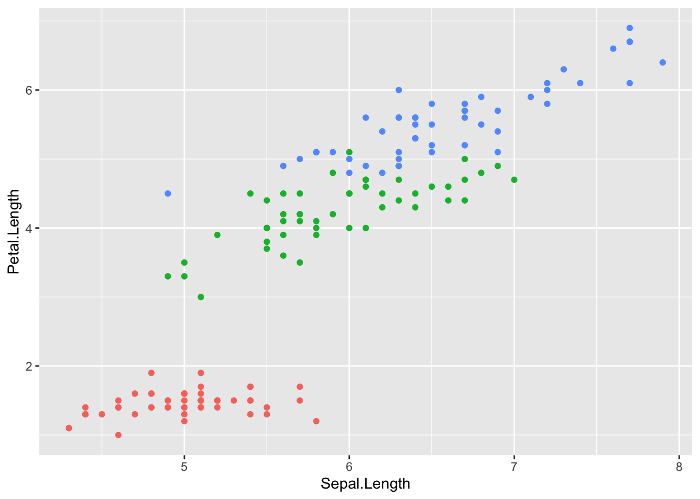

# install.packages("tinytex")
tinytex::install_tinytex()
# to uninstall TinyTeX, run
# tinytex::uninstall_tinytex()6 Публикация
6.1 О воспроизводимости
Полученный в результате количественных исследований результат должен быть проверяем и воспроизводим. Это значит, что в большинстве случаев недостаточно просто рассказать, что вы проделали. Теоретически читатель должен иметь возможность проделать тот же путь, что и автор: вопроизвести его результаты, но в обратном направлении.
Для этого должны выполняться три основных требования:
- доступность данных и метаданных;
- доступность компьютерного кода;
- доступность программного обеспечения.
Уже на этапе планирования исследования очень важно продумать, как вы будете его документировать. Важно помнить, что код пишется не только для машин, но и для людей, поэтому стоит документировать не только то, что вы делали, но и почему. R дает для этого множество возможностей, главная из которых – это Markdown.
6.2 Markdown
Markdown – это облегчённый язык разметки. Он позволяет создавать документы разного формата – не только HTML (веб-страницы), но и PDF и Word. Markdown дает возможность создания полностью воспроизводимых документов, сочетающих код и поясняющий текст. Этот язык используется для создания сайтов, статей, книг, презентаций, отчетов, дашбордов и т.п. Этот курс написан с использованием Markdown.
Чтобы начать работать с документами .rmd, нужен пакет rmarkdown; в RStudio он уже предустановлен. Создание нового документа .rmd происходит из меню.
По умолчанию документ .rmd снабжен шапкой yaml. Она не обязательна. Здесь содержатся данные об авторе, времени создания, формате, сведения о файле с библиографией и т.п.
---
title: "Demo"
author: "My name"
date: "2024-09-05"
output: html_document
---Также в документе .rmd скорее всего будет простой текст и блоки кода. Чтобы “сшить” html (pdf, doc), достаточно нажать кнопку knit либо запустить в консоли код: rmarkdown::render("Demo.Rmd"). После этого в рабочей директории появится новый файл (html, pdf, или doc), которым можно поделиться с коллегами, грантодателями или друзьями.
6.3 Quarto
Работать с маркдауном мы будем, используя издательскую систему Quarto с открытым исходным кодом. Она позволяет создавать и публиковать статьи, презентации, информационные панели, веб-сайты, блоги и книги в HTML, PDF, MS Word, ePub и других форматах. В общем, обычный Markdown тоже позволяет все это делать, но чуть сложнее. Quarto объединяет различные пакеты из экосистемы R Markdown воедино и значительно упрощает работу с ними.
Для .pdf может понадобиться установка LaTeX.
Можно указать сразу несколько форматов для файла, как показано здесь, и “сшить” их одновременно:
quarto::quarto_render(
"untitled.qmd",
output_format = c("pdf", "html", "docx")
)6.4 Шапка YAML
Основные параметры документа хранятся в YAML-шапке. К ним относятся format, title, subtitle, date, date-format, author, abstract, lang, toc, number-sections и другие.
Попробуйте изменить шапку своего .qmd-документа и заново его сшить. Сравните с предыдущей версией.
---
title: "Заголовок"
subtitle: "Подзаголовок"
format: html
author: locusclassicus
date: today
date-format: D.MM.YYYY
abstract: Значенье бублика нам непонятно.
lang: ru
toc: true
number-sections: true
---
Поле execute позволяет задать параметры всех фрагментов кода в документе, например:
---
execute:
echo: false
fig-width: 9
---
Но для отдельных кусков кода эти настройки можно поменять:
```
#| echo: true
sqrt(16)
```Параметр df-print позволяет выбрать один из возможных способов отображения датафреймов:
- default — стандартный, как в консоли;
- tibble — стандартный, как в консоли, но в формате tibble;
- kable — минималистичный вариант, подходит для всех видов документов;
- paged — интерактивная таблица, подходит для html страниц.
6.5 Синтаксис Markdown
6.5.1 Заголовки
Заголовки разного уровня задаются при помощи решетки:
# Заголовок первого уровня
## Заголовок второго уровня
### Заголовок третьего уровня
#### Заголовок четвёртого уровняПример заголовка третьего уровня:
6.5.2 Форматирование
*курсив*
_курсив_
**полужирный**
__полужирный__
***полужирный курсив***
___полужирный курсив___
~~зачеркнутый~~
<mark>выделение</mark>Пример:
курсив
полужирный
уж и не знаю как выделить
зачеркнутый
выделение
6.5.3 Списки
Нумерованный список
1. Пункт первый
2. Пункт второй
3. Пункт третийПример:
- Пункт первый
- Пункт второй
- Пункт третий
Маркированный список
- Пункт первый
- Пункт второй
- Пункт третийПример:
- Пункт первый
- Пункт второй
- Пункт третий
Также Markdown позволяет делать вложенные списки:
1. Пункт первый
- Подпункт первый
- Подпункт второй
2. Пункт второйПример:
- Пункт первый
- Подпункт первый
- Подпункт второй
- Пункт второй
Самое удобное, что элементы списка не обязательно нумеровать:
(@) Пункт первый.
(@) Пункт не знаю какой.- Пункт первый.
- Пункт не знаю какой.
6.5.4 Ссылки
[Текст ссылки](http://antibarbari.ru/)Пример:
6.5.5 Изображения
Пример:

Два нюанса:
- можно давать ссылки на локальные файлы (то есть такие файлы, которые хранятся на компьютере), но имейте в виду, что такой код не будет работать у другого пользователя;
- изображения можно вставлять, пользуясь непосредственно разметкой html.
<img src="images/my_image.jpg" width=40%>6.5.6 Блоки кода
Можно вставлять непосредственно в текст; для этого код выделяют одинарным обратным апострофом (грависом). Но чаще код дают отдельным блоком. Эти блоки можно именовать; тогда в случае ошибки будет сразу понятно, где она случилась.
```{}
some code here
```В фигурных скобках надо указать язык, например {r}, только в этом случае код будет подсвечиваться и выполняться.
Там же в фигурных скобках можно задать следующие параметры:
eval = FALSEкод будет показан, но не будет выполняться;include = FALSEкод будет выполнен, но ни код, ни результат не будут показаны;echo = FALSEкод будет выполнен, но не показан, результаты при этом видны;message = FALSEилиwarning = FALSEпрячет сообщения или предупреждения;results = 'hide'не распечатывает результат, аfig.show = 'hide'прячет графики;error = TRUE“сшивание” продолжается, даже если этот блок вернул ошибку.
6.5.7 Цитаты
> Omnia praeclara rara.Пример:
Omnia praeclara rara.
Цитата с подписью может быть оформлена так:
> Omnia praeclara rara.
>
> --- CiceroПример:
Omnia praeclara rara.
— Cicero
6.5.8 Разделители
Чтобы создать горизонтальную линию, можно использовать ---, *** или ___.
Пример:
6.5.9 Таблицы
Таблицы можно задать вручную при помощи дефисов - и вертикальных линий |; идеальная точность при этом не нужна. Перед таблицей обязательно оставляйте пустую строку, иначе волшебство не сработает.
| Фрукты | Калории |
| ----- | ---- |
| Яблоко | 52 |
| Апельсин | 47 |Пример:
| Фрукты | Калории |
|---|---|
| Яблоко | 52 |
| Апельсин | 47 |
По умолчанию Markdown распечатывает таблицы так, как они бы выглядели в консоли.
data("iris")
head(iris)Для дополнительного форматирования можно использовать функцию knitr::kable():
knitr::kable(iris[1:6, ], caption = "Таблица knitr")| Sepal.Length | Sepal.Width | Petal.Length | Petal.Width | Species |
|---|---|---|---|---|
| 5.1 | 3.5 | 1.4 | 0.2 | setosa |
| 4.9 | 3.0 | 1.4 | 0.2 | setosa |
| 4.7 | 3.2 | 1.3 | 0.2 | setosa |
| 4.6 | 3.1 | 1.5 | 0.2 | setosa |
| 5.0 | 3.6 | 1.4 | 0.2 | setosa |
| 5.4 | 3.9 | 1.7 | 0.4 | setosa |
Интерактивную таблицу можно создать так:
DT::datatable(iris[1:6,])6.5.10 Чек-листы
- [x] Таблицы
- [ ] ГрафикиПример:
6.5.11 Внутренние ссылки
Удобны для навигации по документу. К названию любого раздела можно добавить {#id}.
[Вернуться к чек-листам](#id)Пример:
6.5.12 Графики
Markdown позволяет встраивать любые графики.
library(ggplot2)
ggplot(aes(x = Sepal.Length, y = Petal.Length, col = Species), data = iris) +
geom_point(show.legend = F)
Для интерактивных графиков понадобится пакет plotly:
library(plotly)
plot_ly(data=iris, x = ~Sepal.Length, y = ~Petal.Length, color = ~Species)Подробное руководство по созданию интерактивных графиков можно найти на сайте https://plotly.com/r/.
6.5.13 Математические формулы
Пишутся с использованием синтаксиса LaTeX, о котором можно прочитать подробнее здесь.
Формулы заключаются в одинарный $, если пишутся в строку, и в двойной $$, если отдельным блоком.
\cos (2\theta) = \cos^2 \theta - \sin^2 \thetaВот так это выглядит в тексте: \(\cos (2\theta) = \cos^2 \theta - \sin^2 \theta\).
А вот так – блоком:
\[\cos (2\theta) = \cos^2 \theta - \sin^2 \theta\]
6.5.14 Смайлы
Удобнее вставлять через визуальный редактор (“шестеренка” > Use Visual Editor), но можно и без него:
# devtools::install_github("hadley/emo")
library(emo)
emo::ji("apple")🍎 Код можно записать в строку, тогда смайл появится в тексте: 💀.
6.6 Библиография
Markdown позволяет добавлять библиографию в формате BibTeX. BibTeX — программное обеспечение для создания форматированных списков библиографии; обычно используется совместно с LaTeX’ом. Многие сайты, например GoogleScholar, позволяют экспортировать библиографические записи в формате BibTeX. При необходимости запись можно исправить вручную.
Каждая запись имеет следующую форму.
@book{winter2020,
author = {Bodo Winter},
title = "{Statistics for Linguists: An Introduction Using R}",
year = {2020},
publisher = {Routledge}
}Здесь book — тип записи («книга»), winter2020 — метка-идентификатор записи, дальше список полей со значениями.
Одна запись описывает ровно одну публикацию статью, книгу, диссертацию, и т. д. Подробнее о типах записей можно посмотреть вот здесь.
Подобные записи хранятся в текстовом файле с расширением .bib. Чтобы привязать библиографию, нужно указать имя файла в шапке yaml.
---
bibliography: bibliography.bib
---Дальше, чтобы добавить ссылку, достаточно ввести ключ публикации после @ (в квадратных скобках, чтобы публикация отражалась в круглых): [@wickham2016].
Пример:
Можно интегрировать BibTex с Zotero или другим менеджером библиографии. Для этого придется установить специальное расширение.
Чтобы изменить стиль цитирования, необходимо добавить в шапку yaml название csl-файла (CSL - Citation Style Language), например:
---
output: html_document
bibliography: references.bib
csl: archiv-fur-geschichte-der-philosophie.csl
---Найти необходимый csl-файл можно, например, в репозитории стилей Zotero.
6.7 Публикация html
Для публикации на RPubs понадобится установить пакеты packrat, rsconnect.